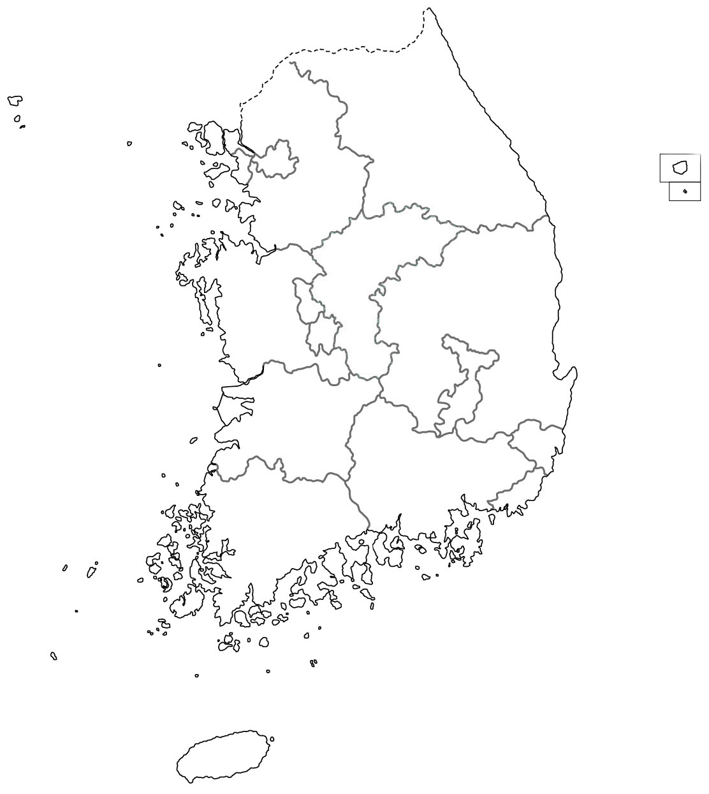

가상 시뮬레이션 · 모든 지지율·여론조사·평가·의석 결과는 게임 내부에서 생성되는 가상 데이터이며 실제 유권자나 선거 결과를 예측하지 않습니다.
현재 진행 단계시작 전
전국 가상 지지율3.0%
예상 비례 의석—석
전략 유세 잔여10 / 10
전국 권역별 가상 지지 현황
권역을 선택하면 해당 권역의 가상 수치를 확인할 수 있습니다.

선택 권역수도권
가상 지지율3.0%
누적 정책 수0건
세대별·직업별 가상 지표
고정된 초기값에서 게임 활동에 따라 완만하게 변동합니다.
세대별
직업별
전략 기록
공천·정책·토론·사건 대응 및 AI 평가 기록
게임을 시작하면 기록이 표시됩니다.
GAME SETUP
게임 설정
정당 및 비례대표 배분 조건을 설정합니다.
경쟁 정당의 득표율은 우리 정당을 제외한 나머지 득표율을 균등 분배하는 단순 가상 모델입니다. 법정 선거제도의 완전한 재현이 아닙니다.